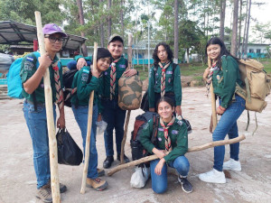
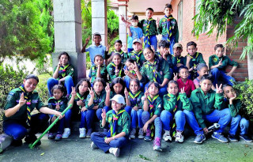
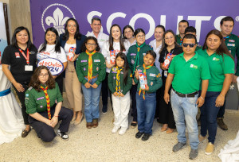

¡Ayuda a los Scouts de Honduras!
Los Scouts de Honduras forman líderes y ciudadanos responsables a través del servicio y la aventura.
Formas de ayudar
Donando

Gracias a personas como tú, podemos seguir formando líderes comprometidos, solidarios y
respetuosos con el medio ambiente. Cada aporte, grande o pequeño, nos ayuda a brindar más
actividades educativas, materiales de campamento, uniformes para quienes más lo necesitan y
experiencias inolvidables para nuestros niños, niñas y jóvenes.
Siendo Voluntario

¿Quieres marcar la diferencia en la vida de niños y jóvenes?
Conviértete en voluntario y forma parte del movimiento Scout en Honduras. No necesitas tener experiencia previa, solo el deseo de servir, aprender y crecer junto a una comunidad que trabaja por un mundo mejor. Ser voluntario es una oportunidad para compartir tus talentos, adquirir nuevas habilidades y vivir aventuras inolvidables mientras inspiras a las futuras generaciones.
Conviértete en voluntario y forma parte del movimiento Scout en Honduras. No necesitas tener experiencia previa, solo el deseo de servir, aprender y crecer junto a una comunidad que trabaja por un mundo mejor. Ser voluntario es una oportunidad para compartir tus talentos, adquirir nuevas habilidades y vivir aventuras inolvidables mientras inspiras a las futuras generaciones.
Compartiendo Nuestra Causa

¿No puedes donar o ser voluntario en este momento? ¡No importa! También puedes ayudarnos compartiendo nuestro mensaje.
Cada vez que hablas de Scouts Honduras, inspiras a otros a sumarse, a creer en un mundo mejor y a apoyar la formación
de líderes con valores.
Tu voz es poderosa. Úsala para hacer el bien.
Comparte esta causa con tu familia, amigos y redes sociales. Juntos, podemos llegar más lejos.
Tu impacto
Gracias a tu apoyo, hemos llevado educación y desarrollo a cientos de jóvenes en Honduras.
Donde quieres compartir nuestra causa.